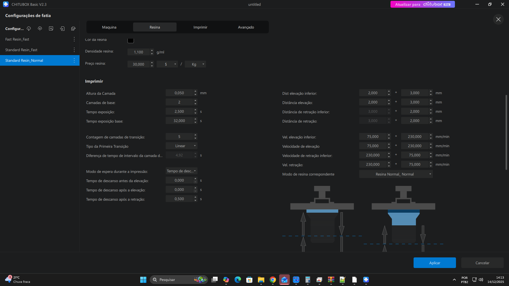
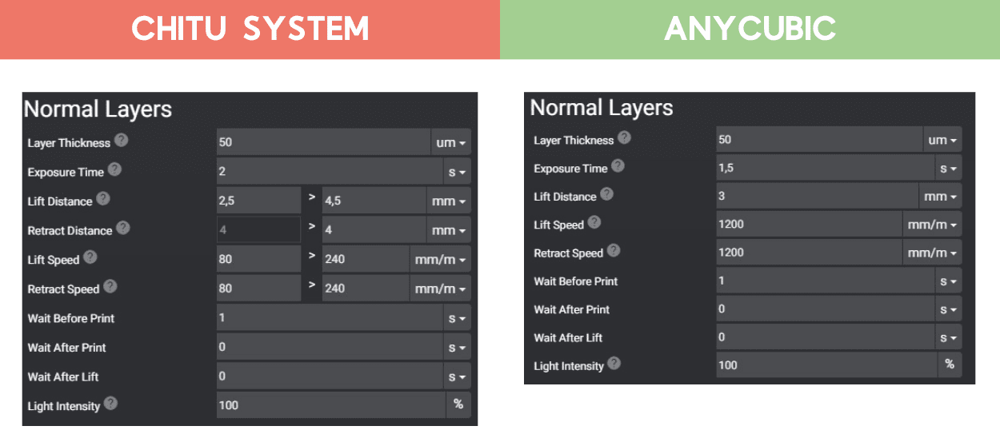

📋 Por que Configurar Corretamente?
A configuração adequada do fatiador é fundamental para obter impressões 3D de resina com qualidade profissional. Parâmetros incorretos resultam em falhas de impressão, peças frágeis, detalhes perdidos e desperdício de resina. Este guia apresenta os parâmetros essenciais para Chitubox e Lychee Slicer, os dois fatiadores mais populares para impressão em resina, com foco especial na relação entre altura de camada e tempo de exposição!
Fatiadores Compatíveis
Este guia cobre os dois principais fatiadores para impressão em resina:
- Chitubox: Fatiador gratuito e popular, com interface intuitiva e suporte a diversos modelos de impressoras
- Lychee Slicer: Fatiador moderno com recursos avançados de suportes automáticos e otimização
Altura de Camada (Layer Height)
0.05mm é o padrão de fábrica e oferece o melhor equilíbrio entre qualidade e velocidade para a maioria das aplicações.
📊 Tabela Comparativa de Alturas de Camada:
| Altura de Camada | Qualidade | Velocidade | Uso Recomendado |
|---|---|---|---|
| 0.025mm | ⭐⭐⭐⭐⭐ Excelente | 🐌 Muito Lenta | Miniaturas, joias, detalhes extremos |
| 0.03mm | ⭐⭐⭐⭐⭐ Excelente | 🐌 Lenta | Miniaturas detalhadas, protótipos de precisão |
| 0.05mm | ⭐⭐⭐⭐ Ótima | ⚡ Normal | Uso geral, padrão recomendado |
| 0.08mm | ⭐⭐⭐ Boa | ⚡⚡ Rápida | Protótipos, peças funcionais |
| 0.10mm | ⭐⭐ Regular | ⚡⚡⚡ Muito Rápida | Rascunhos, testes rápidos |
💡 Dica Importante
Camadas menores aumentam a qualidade e o tempo de impressão. Uma impressão com 0.025mm leva o DOBRO do tempo de uma com 0.05mm, mas os detalhes são significativamente melhores!
Relação Camada x Exposição
Esta é a regra mais importante para configurar fatiadores:
🔥 REGRA DE OURO
Quanto MENOR a camada → MENOR o tempo de exposição
Quanto MAIOR a camada → MAIOR o tempo de exposição
📊 Tabela de Tempos de Exposição por Altura de Camada:
| Altura de Camada | Tempo de Exposição (Típico) | Ajuste Recomendado |
|---|---|---|
| 0.025mm | 1.5s - 2.0s | Reduzir 40-50% do tempo padrão |
| 0.03mm | 2.0s - 2.5s | Reduzir 30-40% do tempo padrão |
| 0.05mm | 2.5s - 3.5s | Tempo padrão (referência) |
| 0.08mm | 3.5s - 4.5s | Aumentar 30-40% do tempo padrão |
| 0.10mm | 4.5s - 6.0s | Aumentar 50-70% do tempo padrão |
⚠️ POR QUE ESSA RELAÇÃO?
Camadas mais finas: A resina líquida tem menos espessura para curar, então precisa de MENOS tempo de exposição UV.
Camadas mais grossas: A resina líquida tem MAIS espessura para curar, então precisa de MAIS tempo de exposição UV para garantir que cure completamente até o fundo da camada.
💡 Exemplo Prático
Se sua resina Quanton3D recomenda 3.0s para 0.05mm:
• Para 0.025mm: use aproximadamente 1.8s (40% menos)
• Para 0.10mm: use aproximadamente 5.0s (65% mais)
Sempre faça o teste de calibração após mudar a altura de camada!
Parâmetros Essenciais no Chitubox/Lychee
 Principais parâmetros que você precisa configurar:
📋 Parâmetros Detalhados:
- Altura de Camada (Layer Height): 0.05mm é o padrão de fábrica. Ajuste conforme necessidade de qualidade vs velocidade.
- Camadas Base (Bottom Layers): 5-8 camadas. Garante boa adesão à plataforma. Impressoras com plataforma flexível podem usar menos.
- Tempo de Exposição Base (Bottom Exposure Time): Deve ser de 8 a 10 vezes MAIOR que o tempo de exposição normal para garantir adesão forte.
- Tempo de Exposição Normal (Exposure Time): Varia conforme resina e altura de camada. Use o gabarito de calibração Quanton3D para encontrar o tempo ideal!
- Velocidade de Elevação (Lift Speed): 60-80mm/min para resinas normais. Use velocidades MENORES (40-60mm/min) para resinas com alta rigidez para evitar quebra da peça.
- Distância de Elevação (Lift Distance): 6-8mm é o padrão. Impressoras com tanque raso podem usar menos (4-5mm).
- Tempo de Retração (Retract Speed): 150-200mm/min. Pode ser mais rápido que o lift speed pois não há risco de quebrar a peça.
- Tempo de Descanso (Rest Time After Lift): 0-2 segundos. Permite que a resina se estabilize no tanque antes da próxima camada.
🎯 Otimização de Parâmetros
Para resinas com "alta rigidez": Use velocidades de elevação (Lift Speed) MAIS LENTAS (40-60mm/min) para evitar quebra da peça durante a impressão.
Para resinas flexíveis: Use lift speed normal (60-80mm/min) e aumente ligeiramente o tempo de exposição (+0.5s).
Parâmetros Detalhados do Chitubox
Entenda CADA parâmetro do Chitubox e como ele afeta sua impressão:
📋 Seção: Imprimir (Print Settings)
- Altura da Camada (Layer Height):
O que é: Espessura de cada camada de resina curada
Valor típico: 0.05mm
Como afeta: Camadas menores = mais qualidade + mais tempo. Camadas maiores = menos qualidade + menos tempo
Ajuste: 0.025mm (alta qualidade) até 0.10mm (rápido) - Camadas de Base (Bottom Layers):
O que é: Número de camadas iniciais com exposição prolongada
Valor típico: 5-8 camadas
Como afeta: Garante adesão forte à plataforma de impressão
Ajuste: Plataforma flexível pode usar 3-5. Plataforma rígida use 6-8 - Tempo Exposição (Exposure Time):
O que é: Tempo que a luz UV fica ligada para curar cada camada normal
Valor típico: 2.5-3.5s (para 0.05mm)
Como afeta: Muito baixo = peça frágil. Muito alto = perda de detalhes
Ajuste: Use gabarito de calibração Quanton3D! - Tempo Exposição Base (Bottom Exposure Time):
O que é: Tempo de exposição das camadas base
Valor típico: 30-50s (8-10x o tempo normal)
Como afeta: Garante que a peça grude forte na plataforma
Ajuste: Se peça não adere, aumente para 40-60s - Contagem de Camadas de Transição (Transition Layers Count):
O que é: Número de camadas que fazem transição gradual entre base e normal
Valor típico: 5 camadas
Como afeta: Suaviza a mudança brusca entre camadas base e normais, reduz marcas
Ajuste: 3-8 camadas. Mais camadas = transição mais suave - Tipo da Primeira Transição (Transition Type):
O que é: Como o tempo de exposição muda nas camadas de transição
Valor típico: Linear
Como afeta: Linear = mudança gradual uniforme. Exponencial = mudança mais rápida no início
Ajuste: Mantenha Linear para maioria dos casos - Diferença de Tempo de Intervalo da Camada (Transition Time Difference):
O que é: Quanto o tempo de exposição diminui a cada camada de transição
Valor típico: Calculado automaticamente
Como afeta: Determina a velocidade da transição
Ajuste: Deixe automático na maioria dos casos
⬆️ Seção: Movimento (Motion Settings)
- Dist. Elevação Inferior (Bottom Lift Distance):
O que é: Distância que a plataforma sobe após curar cada camada base
Valor típico: 6-8mm
Como afeta: Precisa ser suficiente para resina fluir sob a peça
Ajuste: Tanque raso = 5mm. Tanque fundo = 8mm - Distância Elevação (Lift Distance):
O que é: Distância que a plataforma sobe após curar cada camada normal
Valor típico: 6-8mm
Como afeta: Igual ao anterior, mas para camadas normais
Ajuste: Pode ser igual ou ligeiramente menor que o bottom lift - Distância de Retração Inferior (Bottom Retract Distance):
O que é: Distância extra que a plataforma desce antes de parar
Valor típico: 0-2mm
Como afeta: Ajuda a comprimir a resina uniformemente
Ajuste: Geralmente 0mm. Use 1-2mm se tiver bolhas - Distância de Retração (Retract Distance):
O que é: Igual ao anterior, mas para camadas normais
Valor típico: 0-2mm
Como afeta: Mesmo efeito do bottom retract
Ajuste: Mantenha igual ao bottom retract - Vel. Elevação Inferior (Bottom Lift Speed):
O que é: Velocidade que a plataforma sobe nas camadas base
Valor típico: 60-80mm/min
Como afeta: Muito rápido pode quebrar a peça. Muito lento aumenta tempo
Ajuste: Resina rígida = 40-60mm/min. Resina flexível = 80-100mm/min - Velocidade de Elevação (Lift Speed):
O que é: Velocidade que a plataforma sobe nas camadas normais
Valor típico: 60-80mm/min
Como afeta: Parâmetro CRÍTICO! Muito rápido = peça quebra durante impressão
Ajuste: Resinas com alta rigidez = 40-60mm/min - Velocidade de Retração Inferior (Bottom Retract Speed):
O que é: Velocidade que a plataforma desce após lift nas camadas base
Valor típico: 150-200mm/min
Como afeta: Pode ser mais rápido pois não há risco de quebrar
Ajuste: 150-250mm/min é seguro - Vel. Retração (Retract Speed):
O que é: Velocidade que a plataforma desce após lift nas camadas normais
Valor típico: 150-200mm/min
Como afeta: Afeta tempo total, mas não qualidade
Ajuste: Pode ser 2-3x mais rápido que lift speed
⏱️ Seção: Tempos de Espera (Wait Times)
- Modo de Espera Durante a Impressão (Rest Mode):
O que é: Quando a impressora aguarda antes de curar
Opções: "Tempo de descanso" ou "Antes da exposição"
Como afeta: Define se espera antes ou depois do lift
Ajuste: "Tempo de descanso" é mais comum - Tempo de Descanso Antes da Elevação (Rest Time Before Lift):
O que é: Pausa após curar, antes de subir a plataforma
Valor típico: 0s
Como afeta: Permite resina drenar antes do movimento
Ajuste: 0-1s. Só use se tiver problemas de adesão - Tempo de Descanso Após a Elevação (Rest Time After Lift):
O que é: Pausa após subir, antes de descer
Valor típico: 0-2s
Como afeta: Permite resina se estabilizar no tanque
Ajuste: 1-2s para resinas viscosas. 0s para resinas fluidas - Tempo de Descanso Após a Retração (Rest Time After Retract):
O que é: Pausa após descer, antes de curar próxima camada
Valor típico: 0.5-1s
Como afeta: Tempo para resina fluir sob a peça
Ajuste: 0.5s para resinas fluidas. 1-2s para resinas viscosas
⚠️ ATENÇÃO - Lift Speed
Velocidade de Elevação (Lift Speed) é o parâmetro que MAIS causa falhas!
Se sua impressão quebra no meio do processo, o problema é quase sempre lift speed muito alto para aquela resina.
Resinas com alta rigidez (Spin+, Tough, Engineering): Use 40-60mm/min
Resinas normais (Standard): Use 60-80mm/min
Resinas flexíveis: Use 80-100mm/min
Parâmetros Detalhados do Lychee Slicer

Entenda CADA parâmetro do Lychee Slicer e como ele afeta sua impressão:
📋 Global Parameters (Parâmetros Globais)
- Two Stage Motion Control (TSMC):
O que é: Sistema de movimento em dois estágios
Valor típico: ON
Como afeta: Permite lift speed diferente no início (mais lento) e depois (mais rápido)
Ajuste: Ative para reduzir risco de quebra mantendo velocidade - Light Off Delay (On) / Resting Time (Off):
O que é: Tempo de espera após desligar a luz UV
Valor típico: ON
Como afeta: ON = espera após curar. OFF = espera após movimento
Ajuste: ON é mais moderno e eficiente
🔥 Burn In Layers (Camadas Base)
- Number of Layers:
O que é: Quantidade de camadas base
Valor típico: 6 camadas
Como afeta: Garante adesão à plataforma
Ajuste: 5-8 camadas conforme tipo de plataforma - Exposure Time:
O que é: Tempo de exposição das camadas base
Valor típico: 30-50s
Como afeta: Deve ser 8-10x maior que exposição normal
Ajuste: Se não aderir, aumente para 40-60s - Transition Layers Count:
O que é: Camadas de transição entre base e normal
Valor típico: 6 camadas
Como afeta: Suaviza mudança, reduz marcas
Ajuste: 4-8 camadas - Lift Distance:
O que é: Distância de elevação nas camadas base
Valor típico: 4-6mm
Como afeta: Precisa ser suficiente para resina fluir
Ajuste: 4-8mm conforme tanque - Retract Distance:
O que é: Distância extra ao descer
Valor típico: 0-2mm
Como afeta: Comprime resina uniformemente
Ajuste: 0mm padrão. 1-2mm se tiver bolhas - Lift Speed:
O que é: Velocidade de subida nas camadas base
Valor típico: 60-100mm/min
Como afeta: Muito rápido pode quebrar
Ajuste: 40-60mm/min para resinas rígidas - Retract Speed:
O que é: Velocidade de descida
Valor típico: 150-200mm/min
Como afeta: Pode ser mais rápido que lift
Ajuste: 150-250mm/min - Light Intensity:
O que é: Intensidade da luz UV (%)
Valor típico: 100%
Como afeta: Reduzir aumenta tempo necessário
Ajuste: Mantenha 100% e ajuste tempo de exposição
📄 Normal Layers (Camadas Normais)
- Layer Thickness:
O que é: Altura de cada camada (Layer Height)
Valor típico: 50 microns (0.05mm)
Como afeta: Menor = mais qualidade. Maior = mais rápido
Ajuste: 25-100 microns (0.025-0.10mm) - Exposure Time:
O que é: Tempo de exposição das camadas normais
Valor típico: 2.5-3.5s (para 0.05mm)
Como afeta: Parâmetro CRÍTICO! Use gabarito de calibração
Ajuste: Varia com altura de camada e resina - Lift Distance:
O que é: Distância de elevação nas camadas normais
Valor típico: 4-6mm
Como afeta: Igual às camadas base
Ajuste: Pode ser igual ou menor que base - Retract Distance:
O que é: Distância de retração
Valor típico: 0-2mm
Como afeta: Compressão da resina
Ajuste: Igual às camadas base - Lift Speed:
O que é: Velocidade de subida - PARÂMETRO CRÍTICO!
Valor típico: 60-180mm/min (com TSMC)
Como afeta: Principal causa de quebra durante impressão
Ajuste: Resina rígida = 40-60mm/min inicial - Retract Speed:
O que é: Velocidade de descida
Valor típico: 150-200mm/min
Como afeta: Tempo total de impressão
Ajuste: Pode ser 2-3x mais rápido que lift - Wait Before Print:
O que é: Tempo de espera antes de curar
Valor típico: 0-1s
Como afeta: Permite resina se acomodar
Ajuste: 0.5-1s para resinas viscosas - Wait After Print:
O que é: Tempo de espera após curar
Valor típico: 0s
Como afeta: Permite drenagem antes de mover
Ajuste: Geralmente 0s - Wait After Lift:
O que é: Tempo de espera após subir
Valor típico: 0-2s
Como afeta: Estabilização da resina no tanque
Ajuste: 1-2s para resinas viscosas - Light Intensity:
O que é: Intensidade da luz UV (%)
Valor típico: 100%
Como afeta: Potência da cura
Ajuste: Mantenha 100%
📐 Scene Scale Compensation (Compensação de Escala)
- Scale X, Y, Z:
O que é: Compensação dimensional em cada eixo
Valor típico: 100% (sem compensação)
Como afeta: Corrige encolhimento da resina após cura
Ajuste: 100-102% se peças saem menores que esperado
⚖️ Compensation (Compensação)
- Compensation Type:
O que é: Tipo de compensação dimensional
Opções: Grey Pixel ou Fixed Removal
Como afeta: Corrige superexposição nas bordas
Ajuste: Grey Pixel é mais preciso - Burn In Layers / Normal Layers:
O que é: Valor de compensação em mm
Valor típico: 0mm (sem compensação)
Como afeta: Reduz dimensões para compensar superexposição
Ajuste: 0-0.2mm se furos saem menores - Support Resin Compensation:
O que é: Compensação específica para suportes
Valor típico: OFF
Como afeta: Facilita remoção de suportes
Ajuste: ON se suportes grudarem muito
⏱️ Print Time Override (Sobrescrever Tempo)
- Time per Burn In Layer / Time per Layer:
O que é: Sobrescrever tempo de exposição por camada
Valor típico: OFF
Como afeta: Permite ajuste fino por camada
Ajuste: Raramente necessário, use apenas para testes avançados
🎯 Diferenças Chitubox vs Lychee
Chitubox: Mais simples e direto. Melhor para iniciantes.
Lychee: Mais opções avançadas (TSMC, compensação). Melhor para usuários experientes.
Ambos produzem resultados excelentes quando configurados corretamente!
Como Configurar Passo a Passo
No Chitubox:
- 1. Abra o Chitubox e clique em "Settings" (ícone de engrenagem)
- 2. Selecione seu modelo de impressora na lista
- 3. Acesse a seção "Parâmetros de Impressão" no site da Quanton3D
- 4. Selecione sua resina específica
- 5. Copie os parâmetros recomendados para o Chitubox
- 6. Ajuste a altura de camada conforme necessário
- 7. Ajuste o tempo de exposição conforme a tabela acima
- 8. Salve o perfil com nome descritivo (ex: "Quanton3D Spin+ 0.05mm")
No Lychee Slicer:
- 1. Abra o Lychee Slicer e clique no ícone de impressora
- 2. Selecione "Add Printer" e escolha seu modelo
- 3. Clique em "Resin Settings" (configurações de resina)
- 4. Crie um novo perfil clicando em "+"
- 5. Acesse os parâmetros da Quanton3D no site
- 6. Configure "Burn In Layers" (camadas base) e "Normal Layers"
- 7. Ajuste "Layer Height" e "Exposure Time" conforme necessário
- 8. Salve o perfil com nome descritivo
💡 Dica Profissional
Crie perfis separados para cada combinação de resina + altura de camada. Por exemplo:
• "Quanton3D Spin+ 0.05mm - Qualidade"
• "Quanton3D Spin+ 0.025mm - Alta Qualidade"
• "Quanton3D Spin+ 0.10mm - Rápido"
Erros Comuns e Como Evitar
🚫 Problemas Frequentes:
| Problema | Causa Provável | Solução |
|---|---|---|
| Peça não adere à plataforma | Tempo de exposição base muito baixo ou nivelamento incorreto | Aumentar tempo base para 40-50s e verificar nivelamento |
| Peça quebra durante impressão | Lift speed muito alto para resina rígida | Reduzir lift speed para 40-60mm/min |
| Detalhes perdidos ou fundidos | Superexposição - tempo muito alto | Reduzir tempo de exposição em 0.5s |
| Peça frágil ou quebradiça | Subexposição - tempo muito baixo | Aumentar tempo de exposição em 0.5s |
| Linhas de camada muito visíveis | Altura de camada muito alta | Reduzir para 0.03mm ou 0.025mm |
| Impressão muito lenta | Altura de camada muito baixa | Aumentar para 0.05mm ou 0.08mm |
⚠️ LEMBRE-SE
Sempre que mudar a altura de camada, você DEVE ajustar o tempo de exposição! Não use o mesmo tempo de 0.05mm para 0.025mm ou 0.10mm - isso resultará em falhas!
Dicas Avançadas
- Anti-Aliasing: Ative no Chitubox/Lychee para suavizar bordas. Recomendado nível 4-8 para melhor qualidade.
- Transição de Camadas Base: Use "Transition Layers" para suavizar a mudança entre camadas base e normais, reduzindo marcas.
- Temperatura da Resina: Resina fria (abaixo de 20°C) precisa de +0.5-1.0s no tempo de exposição. Resina quente (acima de 25°C) pode precisar de -0.3-0.5s.
- Envelhecimento da Tela LCD: Telas com mais de 1000h de uso podem precisar de +0.5-1.0s no tempo de exposição.
- Hollow (Oco): Para peças grandes, use a função "Hollow" para economizar resina. Adicione furos de drenagem de 2-3mm!
- Suportes: Use suportes médios (0.5-0.6mm) para maioria das peças. Suportes leves (0.3-0.4mm) para miniaturas delicadas.
💡 Otimização Final
Após configurar todos os parâmetros, SEMPRE imprima o gabarito de calibração Quanton3D para validar o tempo de exposição! Isso garante que suas configurações estão perfeitas para aquela resina específica.
Checklist de Configuração
Antes de iniciar qualquer impressão, verifique:
- ✅ Impressora selecionada corretamente no fatiador
- ✅ Altura de camada definida (0.05mm recomendado)
- ✅ Tempo de exposição ajustado conforme altura de camada
- ✅ Camadas base configuradas (5-8 camadas)
- ✅ Tempo de exposição base 8-10x maior que normal
- ✅ Lift speed adequado para tipo de resina
- ✅ Suportes adicionados e verificados
- ✅ Orientação da peça otimizada
- ✅ Perfil salvo com nome descritivo
- ✅ Calibração feita com gabarito Quanton3D